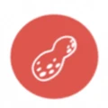
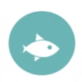
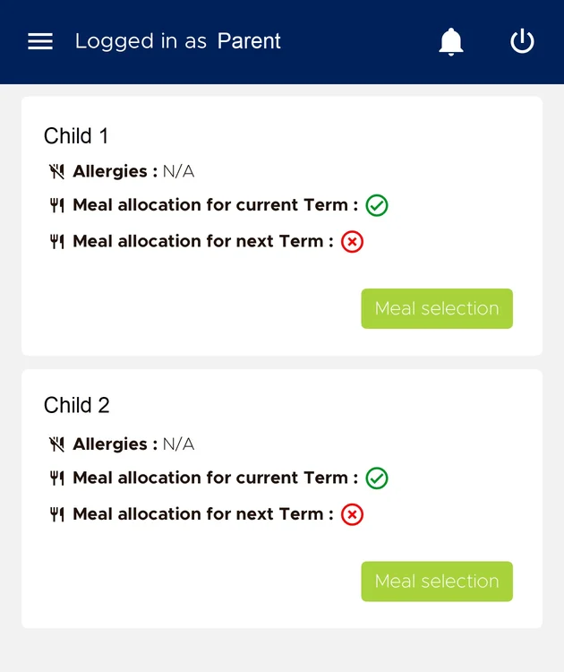

Allergen safety, meal pre-ordering and billing for an international school, built from scratch. Allergy incidents are now close to non-existent, and a daily process that needed 7+ staff runs with 2.
An international school served lunch through a manual process: spreadsheets and hundreds of physical tokens handed out and collected every day. It did not control the one thing that mattered most, students coming into contact with food allergens. That was a liability risk for the school, and no product on the market solved it.
I was the school's IT manager, and I took ownership of the problem as product manager. I wrote the requirements from scratch, designed the application, sourced a remote team of four developers and drove the build from first line to go-live.
Dedicated barcode readers at the serving counter. Camera scanning fails at volume once a queue of students builds up.
Serving staff see allergens as images, because many do not share a language with the students. Allergens are also filtered when a parent makes the reservation.
The kitchen tablet only displays, so staff keep their hands free. This was designed during COVID.
Parents pre-order meals in a mobile app and pay online by card. Each child's allergies and meal allocation sit on one screen, so a mistake is hard to make and easy to see.
The allergen icons below are the ones the app uses: pictures instead of words.



The platform is being modernized with AI coding tools: .NET 4.5 to .NET 10 and a React upgrade across several major versions, with the interface and functions redesigned as part of it.
Terms: school canteen management, allergen management, mobile pre-ordering, barcode access, online card payments, API integration, .NET, React Native, legacy modernization.